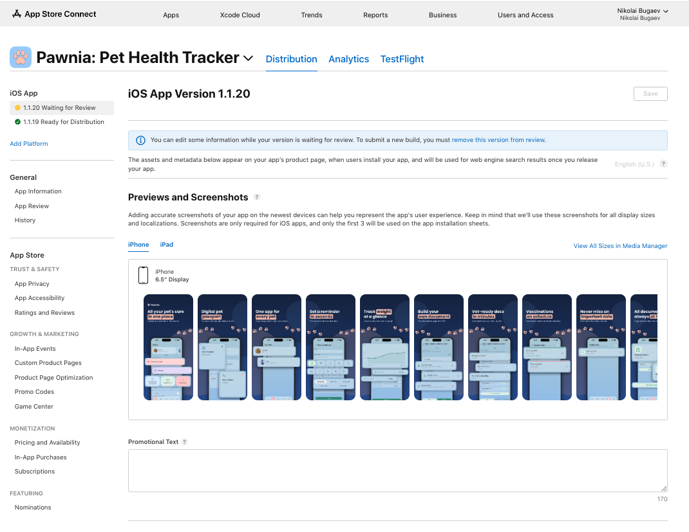

1.5 Submit for Review
Последний шаг: привязать загруженный билд (TestFlight, шаг 1.3) к версии с готовыми метаданными (шаг 1.4) и отправить на проверку Apple. Ниже — реальное «до» и «после» этого шага на примере Pawnia 1.1.20.
«До»: версия в статусе Prepare for Submission
Метаданные готовы (Privacy Policy URL поправлена, App Privacy задекларирована), но билд ещё не выбран и кнопки отправки не было.

Prepare for Submission
Версия создана, метаданные редактируемые, но на ревью ничего не отправлено.
Выбери билд и заполни Export Compliance
На странице версии (раздел Build) нажми «+» или «Select a build» — откроется список билдов, уже прошедших обработку в TestFlight (шаг 1.3). После выбора появится вопрос про экспортные ограничения — для обычного HTTPS-шифрования без собственной криптографии отвечай «No» (используется только стандартное шифрование ОС, документацию предоставлять не нужно).
Нажми «Add for Review» / «Submit for Review»
Версия уходит в очередь Apple. Дальше статус меняется автоматически — обычно от нескольких часов до 1–2 суток, иногда быстрее.
«После»: статус Waiting for Review
Именно это мы увидели для Pawnia 1.1.20 после отправки — подтверждение, что всё прошло без ошибок на стороне App Store Connect.

Waiting for Review
Версия успешно отправлена и стоит в очереди Apple. Если что-то было заполнено неправильно (например, не выбран билд) — отправка просто не прошла бы, а не ушла бы в этот статус. Ниже видна и предыдущая версия 1.1.19 со статусом Ready for Distribution.
Статусы версий →